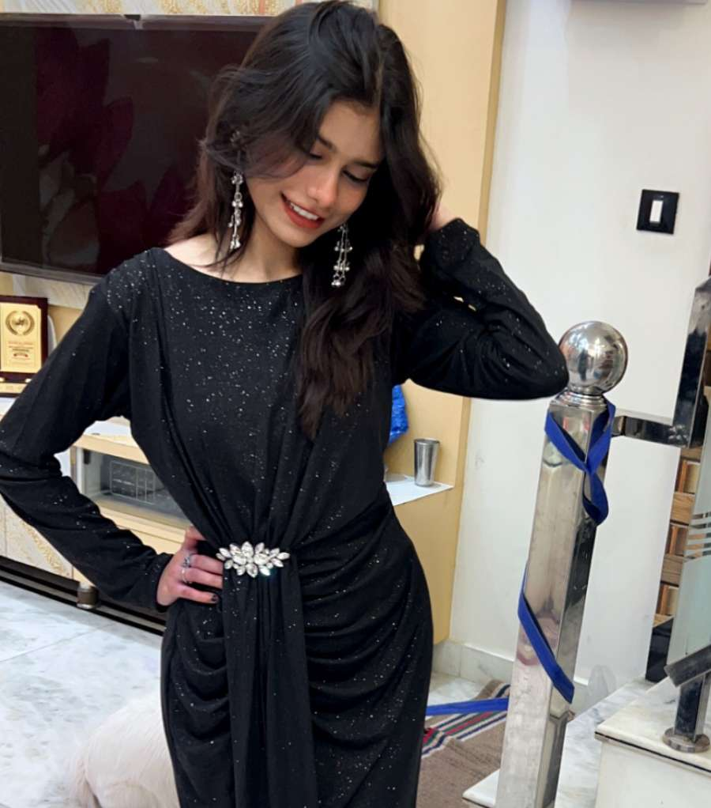
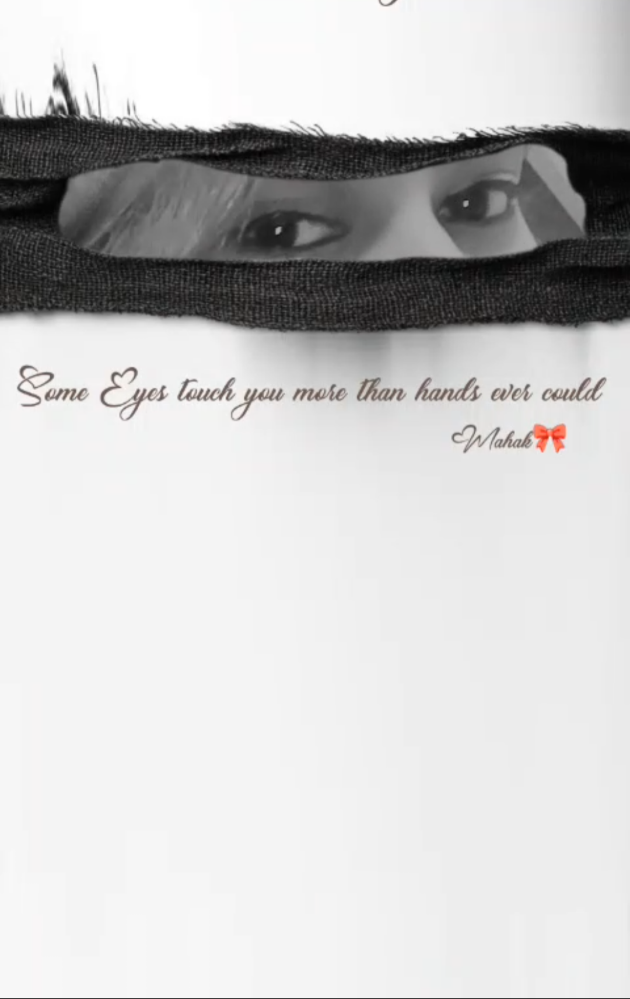
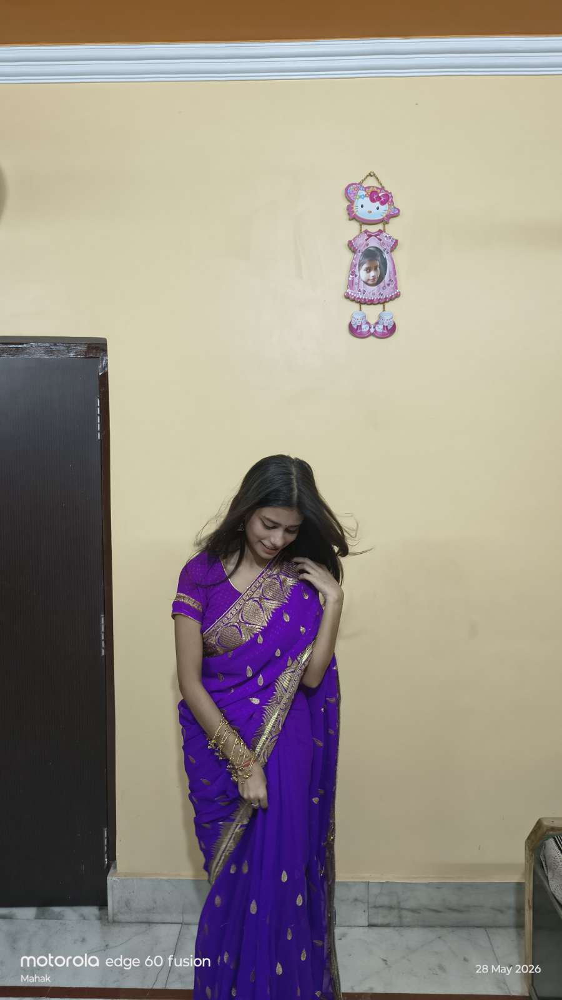
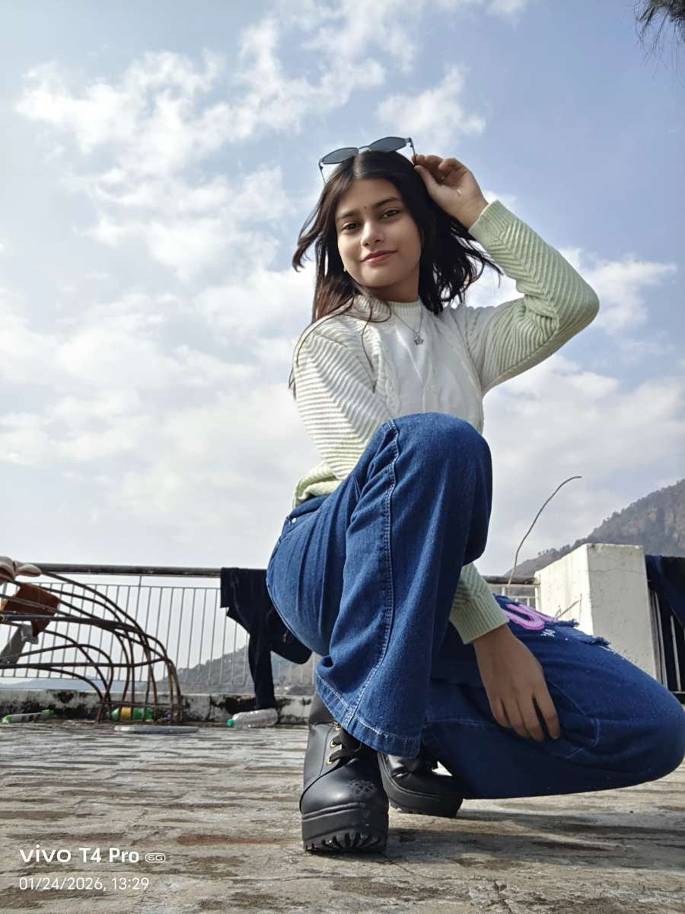
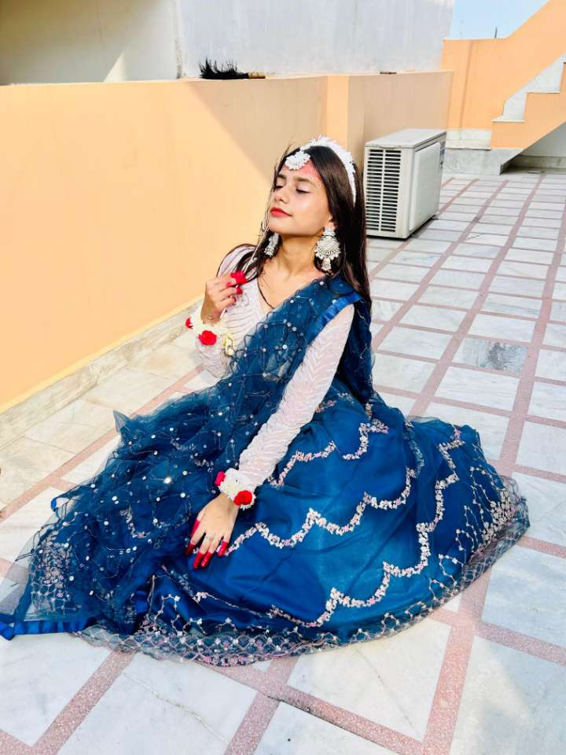
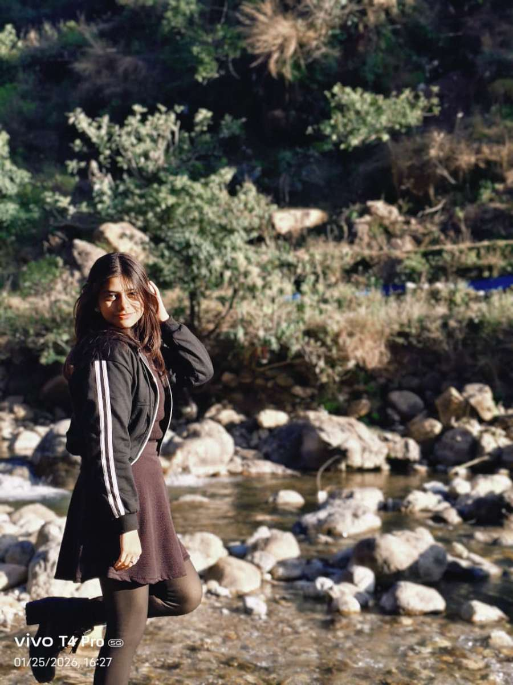
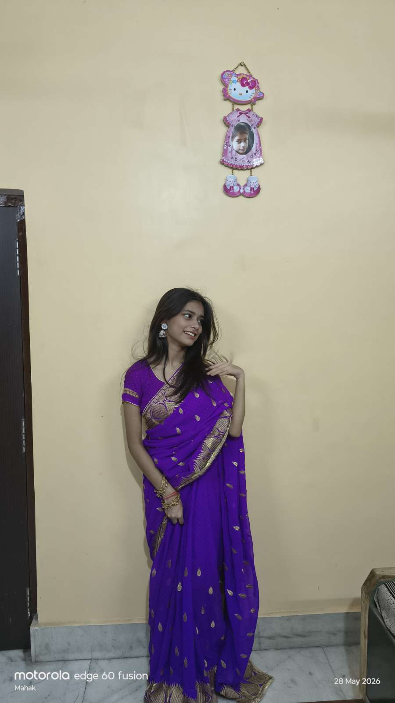

Some memories deserve to be felt, not just seen...
Some people become your favourite story without ever asking to.

You make ordinary moments feel unforgettable.

I don't know what's prettier... your eyes or the peace they bring.

You look the prettiest when you don't even know you're being admired.

Some smiles quietly become someone's favourite place.
You somehow make happiness look effortless.

Some pictures don't need filters... they already shine.

If comfort had a favourite face... I'd probably choose this.

Funny how one person can become your favourite habit.